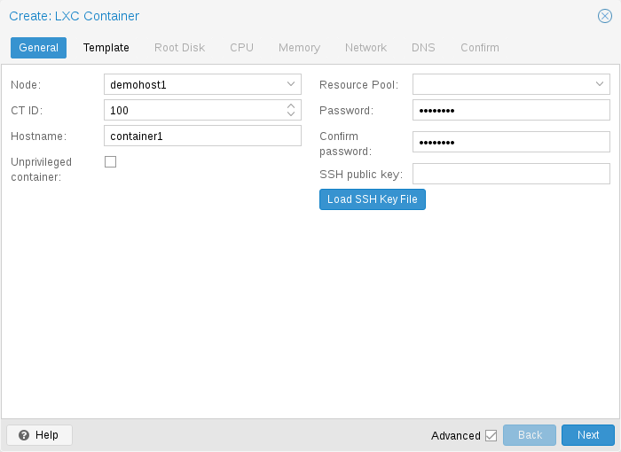
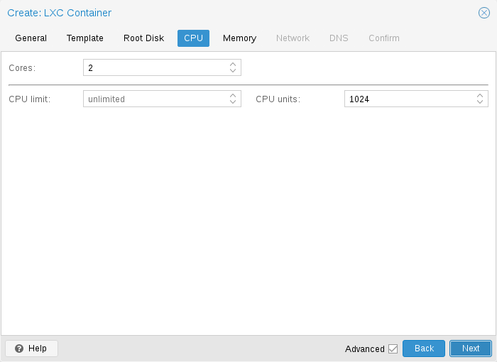
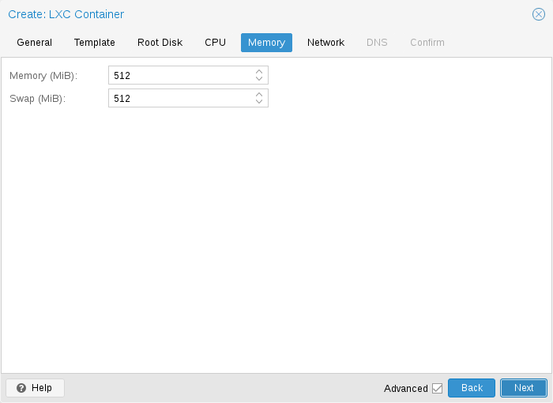
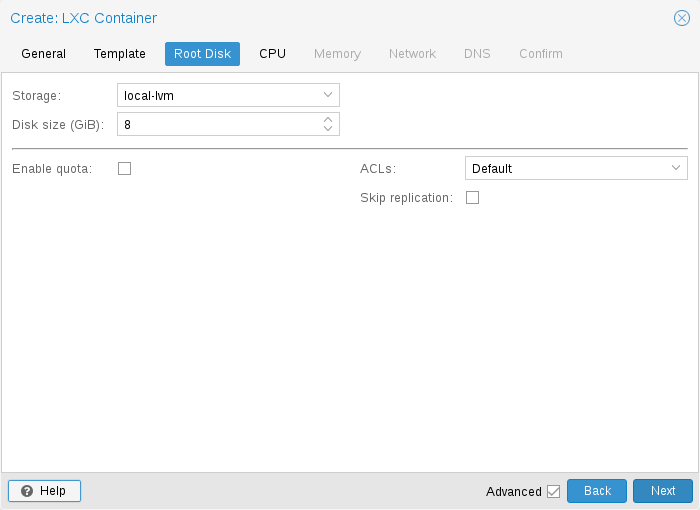
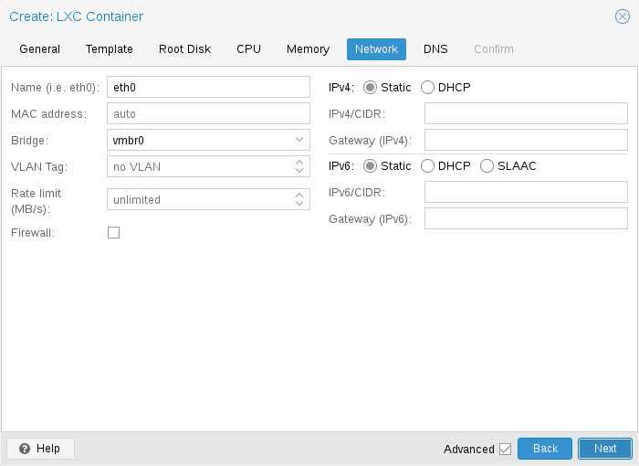

General settings of a container include
- the Node : the physical server on which the container will run
- the CT ID: a unique number in this Proxmox VE installation used to identify your container
- Hostname: the hostname of the container
- Resource Pool: a logical group of containers and VMs
- Password: the root password of the container
- SSH Public Key: a public key for connecting to the root account over SSH
- Unprivileged container: this option allows to choose at creation time if you want to create a privileged or unprivileged container.
- Nesting: expose procfs and sysfs to allow nested containers. Note that systemd also uses this to isolate services.
Unprivileged containers use a new kernel feature called user namespaces. The root UID 0 inside the container is mapped to an unprivileged user outside the container. This means that most security issues (container escape, resource abuse, etc.) in these containers will affect a random unprivileged user, and would be a generic kernel security bug rather than an LXC issue. The LXC team thinks unprivileged containers are safe by design.
This is the default option when creating a new container.
Note
If the container uses systemd as an init system, please be aware the systemd version running inside the container should be equal to or greater than 220.
Security in containers is achieved by using mandatory access control AppArmor restrictions, seccomp filters and Linux kernel namespaces. The LXC team considers this kind of container as unsafe, and they will not consider new container escape exploits to be security issues worthy of a CVE and quick fix. That’s why privileged containers should only be used in trusted environments.

You can restrict the number of visible CPUs inside the container using the
cores option. This is implemented using the Linux cpuset cgroup
(control group).
A special task inside pvestatd tries to distribute running containers among
available CPUs periodically.
To view the assigned CPUs run the following command:
# pct cpusets --------------------- 102: 6 7 105: 2 3 4 5 108: 0 1 ---------------------
Containers use the host kernel directly. All tasks inside a container are handled by the host CPU scheduler. Proxmox VE uses the Linux CFS (Completely Fair Scheduler) scheduler by default, which has additional bandwidth control options.
|
|
You can use this option to further limit assigned CPU time. Please note that this is a floating point number, so it is perfectly valid to assign two cores to a container, but restrict overall CPU consumption to half a core. cores: 2 cpulimit: 0.5 |
|
|
This is a relative weight passed to the kernel scheduler. The
larger the number is, the more CPU time this container gets. Number is relative
to the weights of all the other running containers. The default is |

Container memory is controlled using the cgroup memory controller.
|
|
Limit overall memory usage. This corresponds to the
|
|
|
Allows the container to use additional swap memory from the host
swap space. This corresponds to the |

The root mount point is configured with the rootfs property. You can
configure up to 256 additional mount points. The corresponding options are
called mp0 to mp255. They can contain the following settings:
-
rootfs:[volume=]<volume> [,acl=<1|0>] [,mountoptions=<opt[;opt...]>] [,quota=<1|0>] [,replicate=<1|0>] [,ro=<1|0>] [,shared=<1|0>] [,size=<DiskSize>] - Use volume as container root. See below for a detailed description of all options.
-
mp[n]:[volume=]<volume> ,mp=<Path> [,acl=<1|0>] [,backup=<1|0>] [,mountoptions=<opt[;opt...]>] [,quota=<1|0>] [,replicate=<1|0>] [,ro=<1|0>] [,shared=<1|0>] [,size=<DiskSize>] Use volume as container mount point. Use the special syntax STORAGE_ID:SIZE_IN_GiB to allocate a new volume.
-
acl=<boolean> - Explicitly enable or disable ACL support.
-
backup=<boolean> - Whether to include the mount point in backups (only used for volume mount points).
-
mountoptions=<opt[;opt...]> - Extra mount options for rootfs/mps.
-
mp=<Path> Path to the mount point as seen from inside the container.
Note
Must not contain any symlinks for security reasons.
-
quota=<boolean> - Enable user quotas inside the container (not supported with zfs subvolumes)
-
replicate=<boolean>(default =1) - Will include this volume to a storage replica job.
-
ro=<boolean> - Read-only mount point
-
shared=<boolean>(default =0) Mark this non-volume mount point as available on all nodes.
Warning
This option does not share the mount point automatically, it assumes it is shared already!
-
size=<DiskSize> - Volume size (read only value).
-
volume=<volume> - Volume, device or directory to mount into the container.
-
Currently there are three types of mount points: storage backed mount points, bind mounts, and device mounts.
Typical container rootfs configuration.
rootfs: thin1:base-100-disk-1,size=8G
Storage backed mount points are managed by the Proxmox VE storage subsystem and come in three different flavors:
- Image based: these are raw images containing a single ext4 formatted file system.
- ZFS subvolumes: these are technically bind mounts, but with managed storage, and thus allow resizing and snapshotting.
-
Directories: passing
size=0triggers a special case where instead of a raw image a directory is created.
Note
The special option syntax STORAGE_ID:SIZE_IN_GB for storage backed
mount point volumes will automatically allocate a volume of the specified size
on the specified storage. For example, calling
pct set 100 -mp0 thin1:10,mp=/path/in/container
will allocate a 10GB volume on the storage thin1 and replace the volume ID
place holder 10 with the allocated volume ID, and setup the moutpoint in the
container at /path/in/container
Bind mounts allow you to access arbitrary directories from your Proxmox VE host inside a container. Some potential use cases are:
- Accessing your home directory in the guest
- Accessing an USB device directory in the guest
- Accessing an NFS mount from the host in the guest
Bind mounts are considered to not be managed by the storage subsystem, so you cannot make snapshots or deal with quotas from inside the container. With unprivileged containers you might run into permission problems caused by the user mapping and cannot use ACLs.
Note
The contents of bind mount points are not backed up when using vzdump.
Warning
For security reasons, bind mounts should only be established using
source directories especially reserved for this purpose, e.g., a directory
hierarchy under /mnt/bindmounts. Never bind mount system directories like
/, /var or /etc into a container - this poses a great security risk.
Note
The bind mount source path must not contain any symlinks.
For example, to make the directory /mnt/bindmounts/shared accessible in the
container with ID 100 under the path /shared, add a configuration line such as:
mp0: /mnt/bindmounts/shared,mp=/shared
into /etc/pve/lxc/100.conf.
Or alternatively use the pct tool:
pct set 100 -mp0 /mnt/bindmounts/shared,mp=/shared
to achieve the same result.
Device mount points allow to mount block devices of the host directly into the
container. Similar to bind mounts, device mounts are not managed by Proxmox VE’s
storage subsystem, but the quota and acl options will be honored.
Note
Device mount points should only be used under special circumstances. In most cases a storage backed mount point offers the same performance and a lot more features.
Note
The contents of device mount points are not backed up when using
vzdump.

You can configure up to 10 network interfaces for a single container.
The corresponding options are called net0 to net9, and they can contain the
following setting:
-
net[n]:name=<string> [,bridge=<bridge>] [,firewall=<1|0>] [,gw=<GatewayIPv4>] [,gw6=<GatewayIPv6>] [,host-managed=<1|0>] [,hwaddr=<XX:XX:XX:XX:XX:XX>] [,ip=<(IPv4/CIDR|dhcp|manual)>] [,ip6=<(IPv6/CIDR|auto|dhcp|manual)>] [,link_down=<1|0>] [,mtu=<integer>] [,rate=<mbps>] [,tag=<integer>] [,trunks=<vlanid[;vlanid...]>] [,type=<veth>] Specifies network interfaces for the container.
-
bridge=<bridge> - Bridge to attach the network device to.
-
firewall=<boolean> - Controls whether this interface’s firewall rules should be used.
-
gw=<GatewayIPv4> - Default gateway for IPv4 traffic.
-
gw6=<GatewayIPv6> - Default gateway for IPv6 traffic.
-
host-managed=<boolean> - Whether this interface’s IP configuration should be managed by the host.
-
hwaddr=<XX:XX:XX:XX:XX:XX> - A common MAC address with the I/G (Individual/Group) bit not set.
-
ip=<(IPv4/CIDR|dhcp|manual)> - IPv4 address in CIDR format.
-
ip6=<(IPv6/CIDR|auto|dhcp|manual)> - IPv6 address in CIDR format.
-
link_down=<boolean> - Whether this interface should be disconnected (like pulling the plug).
-
mtu=<integer> (64 - 65535) - Maximum transfer unit of the interface. (lxc.network.mtu)
-
name=<string> - Name of the network device as seen from inside the container. (lxc.network.name)
-
rate=<mbps> - Apply rate limiting to the interface
-
tag=<integer> (1 - 4094) - VLAN tag for this interface.
-
trunks=<vlanid[;vlanid...]> - VLAN ids to pass through the interface
-
type=<veth> - Network interface type.
-
To automatically start a container when the host system boots, select the option Start at boot in the Options panel of the container in the web interface or run the following command:
# pct set CTID -onboot 1
Start and Shutdown Order.

If you want to fine tune the boot order of your containers, you can use the following parameters:
- Start/Shutdown order: Defines the start order priority. For example, set it to 1 if you want the CT to be the first to be started. (We use the reverse startup order for shutdown, so a container with a start order of 1 would be the last to be shut down)
- Startup delay: Defines the interval between this container start and subsequent containers starts. For example, set it to 240 if you want to wait 240 seconds before starting other containers.
- Shutdown timeout: Defines the duration in seconds Proxmox VE should wait for the container to be offline after issuing a shutdown command. By default this value is set to 60, which means that Proxmox VE will issue a shutdown request, wait 60s for the machine to be offline, and if after 60s the machine is still online will notify that the shutdown action failed.
Please note that containers without a Start/Shutdown order parameter will always start after those where the parameter is set, and this parameter only makes sense between the machines running locally on a host, and not cluster-wide.
If you require a delay between the host boot and the booting of the first container, see the section on Proxmox VE Node Management.
You can add a hook script to CTs with the config property hookscript.
# pct set 100 -hookscript local:snippets/hookscript.pl
It will be called during various phases of the guests lifetime. For an example
and documentation see the example script under
/usr/share/pve-docs/examples/guest-example-hookscript.pl.